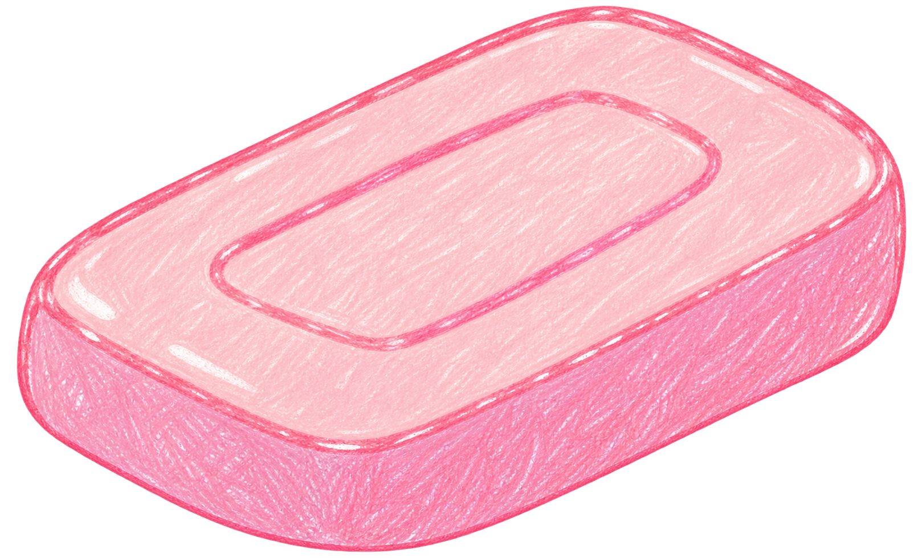

어릴 적 기억나요?
비누로 거품을 만들며 놀던 날을 기억하나요?
어린 시절의 세계로 들어가고 있어요...

나를 끌어 줘!거품을 만들고 있어요. 0%
최고 기록
이름점수
점수0내 비눗방울
남은 시간 20초
색깔은 확인 후 공개돼요.
엄지와 검지로 터뜨려요!
엄지와 검지를 붙여 주세요!
오늘의 기록
오늘의 총점 0점
현재 최고 기록 순위
순위이름점수
이전 단계로 돌아가고 있어요...